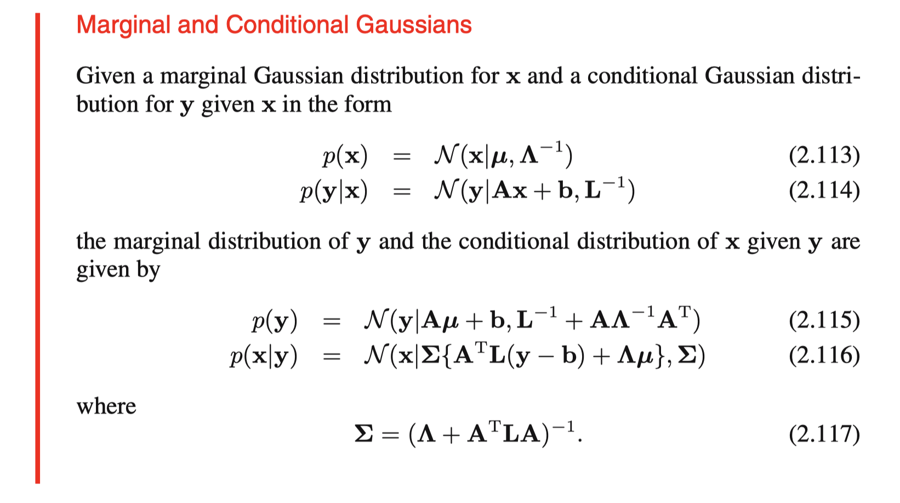
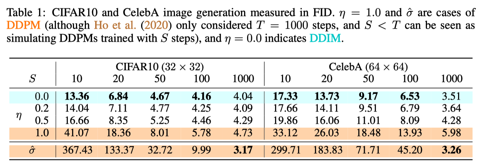

November 5, 2023
作者: 赖泽强
写在前面
#
DDIM 全称 【Denoising Diffusion Implict Model】，是一篇发表于 ICLR 2021 的论文，不过实际时间也就比 DDPM 晚几个月（2020 年 10 月）就挂在 arXiv 上了。作者呢，则是 Yang Song 博士（也就是 Score-based Diffusion Model 的奠基人）的同门，Jiaming Song 博士， Chenlin Meng 博士（她在Guided Diffusion 蒸馏领域的早期工作获得了 CVPR2023 的 Award Candidate），以及 Stefano Ermon 教授。
老实说，这是一篇比较难懂的论文，一方面是里面涉及大量的推导以及概率论等相关背景知识，另一方面也是推导过程不太直观，以及刚接触的人难以获取到的 intutition，其他也包括一些 notation 的差异和 typo。
以下是个人对 DDIM 的一些理解（数学不好，记性也不行，也当是方便以后查阅的笔记），如果有理解上的错误，还请大佬们批评指正。
撰写过程不仅参考了原论文，还包括了
在此向互联网上热心分享的同僚表示敬意。
DDIM 出发点
#
DDIM 虽然是一个比较难的算法，但这并不意味着每一个从事扩散模型研究的人员都需要知道其具体的原理。对于大部分人来说，其实只需要知道
DDIM 是 DDPM 的一种加速采样算法，它可以进行确定性采样（也即给定一个初始的随机噪声，通过DDIM 进行采样，不管采样多少次，最终的结果是一样的，而原始的 DDPM 采样是随机采样，即便初始噪声一致，最终结果也可能不一致），除此之外，DDIM 采样可以在 50 步左右达到 DDPM 1000 步的性能/图片质量。
不过如果想要基于 DDIM 做一些进一步的研究，我们则必须更进一步：
因为不是作者本人，所以我们也无从得知，DDIM 一开始怎么被想出来的。但是从论文以及个人理解来看，DDIM 的推导基石应该是发现了 DDPM 的训练目标实际上只跟 $q(x_t|x_0)$ 这个边缘分布有关，这意味着我们有一簇不同的生成模型可以与之对应，换言之，通过这个训练目标训练出来的模型可以用于不同生成模型的采样过程，如果我们能找到一个收敛更快的生成模型，那么我们实际上变相的加速了 DDPM 的采样（为什么说是变相呢，因为严格来说，这时候的生成模型应该不算是 DDPM 了）。
那么为什么说 DDPM 的训练目标实际上只跟 $q(x_t|x_0)$ 这个边缘分布有关 呢 ？
如果我们从 Latent variable model 的角度考虑 Diffusion Model，我们的隐变量是一个集合 $x_{1:T}$，我们在优化的时候，实际上是在优化下面的 变分下界（ELBO）：
$$
\begin{aligned}
log P(x) & = log\int P(x_0|x_{1:T})P(x_{1:T})dx_{1:T} \\
& \geq E_{x\sim Q}[log\frac{ P(x_0|x_{1:T})P(x_{1:T})}{Q(x_{1:T}|x_0)}] \\
& = E_{x\sim Q}[log\frac{ P(x_{0:T})}{Q(x_{1:T}|x_0)}]
\end{aligned}
$$
乍一看，这个优化目标和联合分布 $P(x_{0:T})$ 和 $Q(x_{1:T}|x_0)$ 有关。
但是如果我们把这个优化目标展开，参考 DDPM 原始论文，我们可以得到这么一个优化目标
$$
\mathbb{E}_q[\underbrace{D_{\mathrm{KL}}\left(q\left(\mathbf{x}_T \mid \mathbf{x}_0\right) \| p\left(\mathbf{x}_T\right)\right)}_{L_T}+\sum_{t>1} \underbrace{D_{\mathrm{KL}}\left(q\left(\mathbf{x}_{t-1} \mid \mathbf{x}_t, \mathbf{x}_0\right) \| p_\theta\left(\mathbf{x}_{t-1} \mid \mathbf{x}_t\right)\right)}_{L_{t-1}} \underbrace{-\log p_\theta\left(\mathbf{x}_0 \mid \mathbf{x}_1\right)}_{L_0}]
$$
其中 $L_0$ 和 $L_T$ 都是不训练的，所以实际 loss 里没有他们，对于 $L_{t-1}$，DDPM 的 formulation 是
$$
\mathbb{E}_{\mathbf{x}_0, \boldsymbol{\epsilon}}\left[\frac{\beta_t^2}{2 \sigma_t^2 \alpha_t\left(1-\bar{\alpha}_t\right)}\left\|\boldsymbol{\epsilon}-\boldsymbol{\epsilon}_\theta\left(\sqrt{\bar{\alpha}_t} \mathbf{x}_0+\sqrt{1-\bar{\alpha}_t} \boldsymbol{\epsilon}, t\right)\right\|^2\right]
$$
而 $\sqrt{\bar{\alpha}_t} \mathbf{x}_0+\sqrt{1-\bar{\alpha}_t} \boldsymbol{\epsilon}$ 对应的是 $q(x_t|x_0)$ 的采样过程。
所以，实际上 DDPM 的优化目标实际上只与 $q(x_t|x_0)$ 有关，因此，通过这个优化目标训练出来的模型，可以用到任何具有相同 $q(x_t|x_0)$ 的生成模型。
DDIM 推导
#
在理解出发点之后，我们的目标就很明确了，怎么找一个具有相同 $q(x_t|x_0)$ 的生成模型（论文里称之为 generative process）。这部分就是 DDIM 原论文第三章《Variational Inference for Non-Markovian Forward Processes》的内容。
这一章作者提到他们使用了一个 non-Markovian 的 inference process 去替代 DDPM 的 Markovian inference process，至于二者的区别可以在后面再细究。
马尔科夫过程
每个状态转移到下一个状态的概率只与当前状态有关。
原论文里 3.1 节是比较魔幻，容易让人莫名其妙的，因为作者这里直接给出来他们推导出来的结果，然后在附录里附上了证明过程，证明该 generative process 和 DDPM 具有相同的 $q(x_t|x_0)$，但这个结果肯定不是拍脑袋出来的，在苏剑林老师的博客里，他通过待定系数法，从约束出发呈现了该结果的推导过程，虽然这不一定是原作者的真实推导过程，但一定程度上也可以供参考：
首先我们回顾一下 DDPM 的推导过程
$$
p(\boldsymbol{x}_t|\boldsymbol{x}_{t-1})\xrightarrow{\text{推导}}p(\boldsymbol{x}_t|\boldsymbol{x}_0)\xrightarrow{\text{推导}}q(\boldsymbol{x}_{t-1}|\boldsymbol{x}_t, \boldsymbol{x}_0)\xrightarrow{\text{近似}}p(\boldsymbol{x}_{t-1}|\boldsymbol{x}_t)
$$
其中采样过程理论上需要用到 $p(x_{t-1}|x_t)$, 但实际上采用 $q(x_{t-1}|x_t, x_0)$ 做近似，因此我们需要做的就是推导一个不一样的 $q(x_{t-1}|x_t, x_0)$，在原论文里，作者直接写出了这个公式（原论文的公式 7）：
$$
q_\sigma\left(\boldsymbol{x}_{t-1} \mid \boldsymbol{x}_t, \boldsymbol{x}_0\right)=\mathcal{N}\left(\sqrt{\alpha_{t-1}} \boldsymbol{x}_0+\sqrt{1-\alpha_{t-1}-\sigma_t^2} \cdot \frac{\boldsymbol{x}_t-\sqrt{\alpha_t} \boldsymbol{x}_0}{\sqrt{1-\alpha_t}}, \sigma_t^2 \boldsymbol{I}\right) .
$$
那么怎么推导呢？在 DDPM 的论文里，我们有
$$
\begin{aligned}
q\left(\mathbf{x}_{t-1} \mid \mathbf{x}_t, \mathbf{x}_0\right) & =\mathcal{N}\left(\mathbf{x}_{t-1} ; \tilde{\boldsymbol{\mu}}_t\left(\mathbf{x}_t, \mathbf{x}_0\right), \tilde{\beta}_t \mathbf{I}\right) \\
\text { where } \quad \tilde{\boldsymbol{\mu}}_t\left(\mathbf{x}_t, \mathbf{x}_0\right) & :=\frac{\sqrt{\bar{\alpha}_{t-1}} \beta_t}{1-\bar{\alpha}_t} \mathbf{x}_0+\frac{\sqrt{\alpha_t}\left(1-\bar{\alpha}_{t-1}\right)}{1-\bar{\alpha}_t} \mathbf{x}_t \quad \text { and } \quad \tilde{\beta}_t:=\frac{1-\bar{\alpha}_{t-1}}{1-\bar{\alpha}_t} \beta_t
\end{aligned}
$$
可以看到 $q(x_{t-1}|x_t, x_0)$ 这里是一个正态分布，基于此，我们可以假设一个更general的形式，我们假设：
$$
q(\boldsymbol{x}_{t-1}|\boldsymbol{x}_t, \boldsymbol{x}_0) = \mathcal{N}(\boldsymbol{x}_{t-1}; \kappa_t \boldsymbol{x}_t + \lambda_t \boldsymbol{x}_0, \sigma_t^2 \boldsymbol{I})
$$
回忆
以下推导基于苏剑林的博客和原论文附录 B
我们的约束是和 DDPM 具有相同的 $q(x_t|x_0)$，那么根据归纳法，这等价于约束和 DDPM 具有相同的 $q(x_{t-1}|x_0)$。
为什么要做这个转换呢？
因为如果我们想要约束 $q(x_t|x_0)$，那么直觉上第一步是建立 $q(x_t|x_0)$ 和 $q(x_{t-1}|x_t, x_0)$ 的联系，这可以通过贝叶斯公式实现：
$$
q(\boldsymbol{x}_{t-1}|\boldsymbol{x}_t, \boldsymbol{x}_0) \sim p(\boldsymbol{x}_{t-1}|\boldsymbol{x}_t, \boldsymbol{x}_0) = \frac{p(\boldsymbol{x}_t|\boldsymbol{x}_{t-1})p(\boldsymbol{x}_{t-1}|\boldsymbol{x}_0)}{p(\boldsymbol{x}_t|\boldsymbol{x}_0)}
$$
因为 q 分布是对 p 分布的等价近似，下面使用 p 分布进行推导。
首先进行一个等价变换
$$
p(\boldsymbol{x}_{t-1}|\boldsymbol{x}_t, \boldsymbol{x}_0) p(\boldsymbol{x}_t|\boldsymbol{x}_0) = p(\boldsymbol{x}_t|\boldsymbol{x}_{t-1}) p(\boldsymbol{x}_{t-1}|\boldsymbol{x}_0)
$$
左右两边同时积分消掉 $p(x_t|x_{t-1})$ 得到
$$
\int p(\boldsymbol{x}_{t-1}|\boldsymbol{x}_t, \boldsymbol{x}_0) p(\boldsymbol{x}_t|\boldsymbol{x}_0) d\boldsymbol{x}_t = p(\boldsymbol{x}_{t-1}|\boldsymbol{x}_0)\label{eq:margin}
$$
关于这个转换，概率论小白一开始表示非常难以理解，不过仔细想想，右边之所以能消掉是因为 $p(x_{t-1}|x_0)$ 跟 $x_t$ 无关，所以对右边积分，等价于 $p(x_{t-1}|x_0) \int p(x_t|x_{t-1}) dx_t = p(x_{t-1}|x_0) \times 1$。
另外，其实这玩意也怪怪的 $\int p(x_t|x_{t-1}) dx_t = 1$，因为我们一般见到的是边缘概率的形式 $\int p(x_t) dx_t = 1$，而非前面那种条件概率。不过等式左边积分实际上 $x_t$ 每个取值的和，但$x_t$ 本身是关于 $x_{t-1}$ 的函数，不过因为是概率密度函数，所以和自然也还是 1 。
回到刚刚的积分，等式左边都包含有 $x_t$，自然是没法像右边一样消掉。
可以看到，我们至此得到了 $p(x_{t-1}|x_0)$ 的表达式，我们只要把前面假设的更 general 的 $q(x_{t-1}|x_t, x_0)$（如下） 的代入等式，用待定系数法求解即可得到 $q(x_{t-1}|x_t, x_0)$ 的表达式。
$$
q(\boldsymbol{x}_{t-1}|\boldsymbol{x}_t, \boldsymbol{x}_0) = \mathcal{N}(\boldsymbol{x}_{t-1}; \kappa_t \boldsymbol{x}_t + \lambda_t \boldsymbol{x}_0, \sigma_t^2 \boldsymbol{I})
$$
待定系数法求解
那么问题来了，我们知道 $p(x_{t-1}|x_0) = N(\sqrt{\alpha_{t-1}}x_0, (1-\alpha_{t-1}) I)$，但等式里的积分怎么办？
注意
这里的 $\alpha_{t-1}$ 等价于 DDPM 里的 $\bar{\alpha_{t-1}}$，作者在附录里有专门讲为什么他要用这套 notation。
DDIM 里的原论文是先给出了 $p(x_{t-1}|x_t, x_0)$，然后基于条件 $p(x_{t}|x_0) = N(\sqrt{\alpha_{t}}, (1-\alpha_{t}) I)$，通过 Bishop (2006) (2.115), 证明等式成立。
Bishop(2006): Christopher M Bishop. Pattern recognition and machine learning. springer, 2006.
那 Bishop(2006) 2.115 究竟讲了个什么呢，没有书的看
这里。

Bishop(2006) 2.115
这里直接截图了，其实讲的就是当给定一个高斯的边缘分布 $p(x)$ 和条件高斯分布$p(y|x)$时，另一个边缘分布是 $p(y)$ 是怎么样的。利用这个性质(2.115)，我们可以把它套到之前的等式里。
$$
\int p(\boldsymbol{x}_{t-1}|\boldsymbol{x}_t, \boldsymbol{x}_0) p(\boldsymbol{x}_t|\boldsymbol{x}_0) d\boldsymbol{x}_t = p(\boldsymbol{x}_{t-1}|\boldsymbol{x}_0)
$$
不过直接套，还是有一些心理障碍，因为这个 $x_0$ 摆在上面看着实在憋屈，没法直接对应过来。直觉上，把 $x_0$ 直接去掉等式应该也是成立的，不过我不知道这种做法的出处是什么，如果有佬知道，还请麻烦留个言，不胜感激。
当我们去掉$x_0$之后，那就简单了（第一个等号利用了全概率公式）
$$
\int p(\boldsymbol{x}_{t-1}|\boldsymbol{x}_t) p(\boldsymbol{x}_t) d\boldsymbol{x}_t = p(\boldsymbol{x}_{t-1}) = p(\boldsymbol{x}_{t-1})
$$
还原回来
$$
\int p(\boldsymbol{x}_{t-1}|\boldsymbol{x}_t, \boldsymbol{x}_0) p(\boldsymbol{x}_t| \boldsymbol{x}_0) d\boldsymbol{x}_t = p(\boldsymbol{x}_{t-1}| \boldsymbol{x}_0) = p(\boldsymbol{x}_{t-1}|\boldsymbol{x}_0)
$$
结合 Bishop(2006) 2.115，以及
$$
p(\boldsymbol{x}_{t-1}|\boldsymbol{x}_t, \boldsymbol{x}_0) = \mathcal{N}(\boldsymbol{x}_{t-1}; \kappa_t \boldsymbol{x}_t + \lambda_t \boldsymbol{x}_0, \sigma_t^2 \boldsymbol{I})
$$
$$
p(\boldsymbol{x}_{t}|\boldsymbol{x}_0) = \mathcal{N}(\sqrt{\alpha_{t}}x_0, (1-\alpha_{t}) \boldsymbol{I})
$$
其中 $A = \kappa_t$, $b=\lambda_t x_0$, $\mu=\sqrt{\alpha_{t}}x_0$
我们可以推导出等式左边，也即 $p(x_{t-1}|x_0)$ 的均值为:
$$
A\mu + b = \kappa_t \sqrt{\alpha_{t}}x_0 + \lambda_t x_0
$$
方差为:
$$
\mathbf{L}^{-1}+\mathbf{A} \mathbf{\Lambda}^{-1} \mathbf{A}^{\mathrm{T}} = \sigma^2_t \boldsymbol{I} + \kappa_t (1-\alpha_{t}) \boldsymbol{I} \kappa_t^T
$$
讲了半天终于把等式两边都求出来了，这下可以列方程求解了，回顾等式右边是 $p(x_{t-1}|x_0) = N(\sqrt{\alpha_{t-1}}x_0, (1-\alpha_{t-1}) I)$，那么我们有两个方程：
$$
\sqrt{\alpha_{t-1}}x_0 = \kappa_t \sqrt{\alpha_{t}}x_0 + \lambda_t x_0
$$
$$
(1-\alpha_{t-1}) \boldsymbol{I} = \sigma^2_t \boldsymbol{I} + \kappa_t (1-\alpha_{t}) \boldsymbol{I} \kappa_t^T
$$
由第二个方程，我们可以解出:
$$
\kappa_t = \sqrt{\frac{1-\alpha_{t-1} - \sigma^2_t}{1-\alpha_{t}}}
$$
结合上述结果和第一个方程，我们可以解出：
$$
\lambda_t = \sqrt{\alpha_{t-1}} - \sqrt{\frac{1-\alpha_{t-1} - \sigma^2_t}{1-\alpha_{t}}} \sqrt{\alpha_{t}}
$$
代回
$$
p(\boldsymbol{x}_{t-1}|\boldsymbol{x}_t, \boldsymbol{x}_0) = \mathcal{N}(\boldsymbol{x}_{t-1}; \kappa_t \boldsymbol{x}_t + \lambda_t \boldsymbol{x}_0, \sigma_t^2 \boldsymbol{I})
$$
我们就可以得到
\begin{aligned}
p(\boldsymbol{x}_{t-1}|\boldsymbol{x}_t, \boldsymbol{x}_0) &= \mathcal{N}(\boldsymbol{x}_{t-1}; \kappa_t \boldsymbol{x}_t + (\sqrt{\alpha_{t-1}}- \kappa_t \sqrt{\alpha_{t}}) \boldsymbol{x}_0, \sigma_t^2 \boldsymbol{I}) \\
&=\mathcal{N}(\boldsymbol{x}_{t-1}; \sqrt{\alpha_{t-1}} \boldsymbol{x}_0 + \kappa_t (\boldsymbol{x}_t - \sqrt{\alpha_{t}} \boldsymbol{x}_0), \sigma_t^2 \boldsymbol{I}) \\
&=\mathcal{N}(\boldsymbol{x}_{t-1}; \sqrt{\alpha_{t-1}} \boldsymbol{x}_0 + \sqrt{\frac{1-\alpha_{t-1} - \sigma^2_t}{1-\alpha_{t}}} (\boldsymbol{x}_t - \sqrt{\alpha_{t}} \boldsymbol{x}_0), \sigma_t^2 \boldsymbol{I})
\end{aligned}
🤗 至此我们就得到了 DDIM 论文里的直接给出的公式 7 了。
DDIM 论文的一些 typo
#
附录 B 里的公式 22 和 23 应该是打错了, 方差不应该带根号，原论文多了个根号，应该是下面这个公式
$$
p(x_{t}|x_0) = N(\sqrt{\alpha_{t}}x_0, (1-\alpha_{t}) I)
$$
DDIM 采样
#
基于推导出来的 $p(x_{t-1}|x_t, x_0)$，我们可以很容易写出下面的采样公式（利用重参数化技巧）：
$$
x_{t-1} = \sqrt{\alpha_{t-1}} \boldsymbol{x}_0 + \sqrt{\frac{1-\alpha_{t-1} - \sigma^2_t}{1-\alpha_{t}}} (\boldsymbol{x}_t - \sqrt{\alpha_{t}} \boldsymbol{x}_0) + \sigma_t^2 \epsilon_t
$$
然后，我们需要用网络预测的 $x_0$ 替代上面的 $x_0$。对于 epsilon 参数化的网络 $ \epsilon_{\theta}^{(t)}$，即网络预测的是
$$
x_t = \sqrt{\alpha_{t}}x_0 + \sqrt{(1-\alpha_{t})} \epsilon_{\theta}^{(t)}(x_t)
$$
我们有
$$
x_0 = \frac{x_t - \sqrt{(1-\alpha_{t})} \epsilon_{\theta}^{(t)}(x_t)}{\sqrt{\alpha_{t}}}
$$
把这个式子往回代，我们就得到了最终的采样公式（对应原论文的公式 12）
$$
\boldsymbol{x}_{t-1}=\sqrt{\alpha_{t-1}} \underbrace{\left(\frac{\boldsymbol{x}_{t}-\sqrt{1-\alpha_{t}} \epsilon_{\theta}^{(t)}\left(\boldsymbol{x}_{t}\right)}{\sqrt{\alpha_{t}}}\right)}_{\text {"predicted } \boldsymbol{x}_{0} "}+\underbrace{\sqrt{1-\alpha_{t-1}-\sigma_{t}^{2}} \cdot \epsilon_{\theta}^{(t)}\left(\boldsymbol{x}_{t}\right)}_{\text {"direction pointing to } \boldsymbol{x}_{t} \text { " }}+\underbrace{\sigma_{t} \epsilon_{t}}_{\text {random noise }}
$$
快速采样
#
事实上，DDIM 本身并不能带来加速效果，DDIM 快速采样的原理本质上就是 Stride Sampling，即间隔采样。而间隔采样的基石则是
DDPM的训练结果实质上包含了它的任意子序列参数的训练结果。
具体地，DDPM 的训练过程可以用一个 $\alpha_t$ 的序列定义，每个 step 都是随机采样一个 $\alpha_t$ 对样本进行加噪，然后训练一个去噪模型预测噪声。在训练阶段，t 最大取值为 T，一般为 1000。
朴素的采样方式是 1000,999,998,997 一步一步采样。
间隔采样则是取1000,980,960,940 一步一步采样（采样总步数为 50）。
讨论
#
事实上，通过 DDIM 的推导，我们得到了一个更加 general 的采样过程 $q(x_{t-1}|x_t, x_0)$，这个采样过程包含一个可以调节的参数 $\sigma_t$，通过选取的不同的值，我们可以得到一簇不同的采样过程。
例如，如果选取 $\sigma_t = 0$，那么我们就得了一个确定性的采样过程。
除此之外，我们还可以选取一个特殊的 $\sigma_t$ 得到 DDPM 的 $q(x_{t-1}|x_t, x_0)$，也就是说 DDPM 是 DDIM 的一个特例。事实上，这个也很好理解，因为我们在推导的时候是根据 DDPM 的形式，撰写了一个更 general 的表达式，那么推导出来必然有这个结果。
那么怎么选取$\sigma_t$才能获得最佳的加速效果呢？
为此，作者做了一些实验，作者选取的$\sigma_t$为，通过控制$\eta$可以控制其大小。
$$
\sigma_{\tau_i}(\eta)=\eta \sqrt{\left(1-\alpha_{\tau_{i-1}}\right) /\left(1-\alpha_{\tau_i}\right)} \sqrt{1-\alpha_{\tau_i} / \alpha_{\tau_{i-1}}}
$$
事实上，当$\eta=1$ 的时候我们就变成 DDPM 了，这也对应上我们刚刚提到的特殊的 $\sigma_t$。

可以看到当 $\eta = 0$ 的时候，快速采样效果是最好的。
一个有趣的性质
对于加噪过程，我们有
$$
x_t = \sqrt{\alpha_{t}}x_0 + \sqrt{(1-\alpha_{t})} \epsilon_{\theta}^{(t)}(x_t)
$$
$$
x_{t-1} = \sqrt{\alpha_{t-1}}x_0 + \sqrt{(1-\alpha_{t-1})} \epsilon_{\theta}^{(t-1)}(x_{t-1})
$$
而当 $\sigma_t = 0$ 时，我们有
$$
x_{t-1} = \sqrt{\alpha_{t-1}}x_0 + \sqrt{(1-\alpha_{t-1})} \epsilon_{\theta}^{(t)}(x_t)
$$
所以可以看出 DDIM $\eta = 0$ 实际上用 $\epsilon_{\theta}^{(t)}(x_t)$ 去近似 $\epsilon_{\theta}^{(t-1)}(x_{t-1})$ 。不过因为 $x_0$ 也是预测出来的，所以这里面还会有一个误差。
进一步思考，DDIM 的性能应该取决于相邻两个时间步预测结果的一致性，这也意味着，如果我们用相邻步数的结果去 finetune 一下 SD，即用噪声小的，也就是 t 更小的步数去监督 t+1 步，这样应该可以让性能更好。很好，然后我们就得到了 Consistency Model？